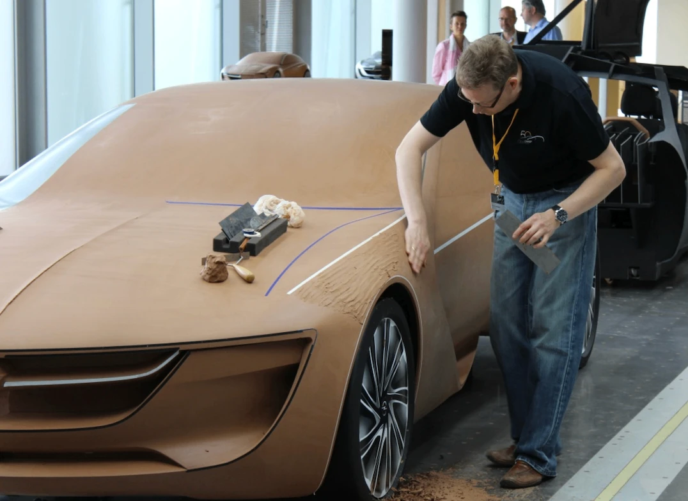

The Full-Size Clay Model
Why car companies still use clay to model cars after the CAD model is finished.
Read case study →Guiding questionWhy is it necessary for designers to prototype ideas as part of a design process?
Prototyping is the cheapest way to find out you are wrong. That sounds bleak, but it is the entire value of this topic. A sketch that fails costs you ninety seconds, a cardboard mock-up that fails costs you an afternoon, and a fully tooled product that fails costs somebody their job. Designers who prototype early are not more talented than designers who do not. They are just wrong sooner, and being wrong sooner is the whole game.
The part students tend to underestimate is fidelity. There is a strong pull toward making things look finished, and a beautiful CAD render early in a project feels like progress. It is usually a trap, because nobody wants to criticise something that looks done, and criticism is what you actually came for. Get comfortable with deliberately rough work. Your IA asks you to show development rather than to show off, and a folder of ugly, informative prototypes is worth more than one polished model nobody ever tested. The drawing conventions in this topic matter for the same reason: they let you hand an idea to someone else and get a real reaction to it instead of a puzzled squint.
Students must be able toExplain the advantages and disadvantages of using low- and high-fidelity prototyping within a design process.
Fidelity describes how closely a prototype resembles the finished product in appearance, materials and functionality. In iterative design, both extremes are used at different stages, not because one is better, but because each is right for a different purpose.
Low-fidelity prototypes are simple, fast and cheap representations of a design idea. Pencil sketches, rough cardboard mockups, paper wireframes and foam block models all qualify. The defining quality is that they are quick to make and easy to change.
High-fidelity prototypes are crafted to look and function as closely as possible to the finished product, incorporating accurate aesthetics, realistic materials and working interactivity. They are built late in the design process, once key decisions have already been tested at lower fidelity.
| Fidelity | Typical form | When to use | Key limitation |
|---|---|---|---|
| Low | Pencil sketches, cardboard models, paper wireframes, foam blocks | Early exploration: testing whether an idea is worth pursuing at all | Cannot test real usability, structural performance or sensory qualities |
| Mid | Digital wireframes, 3D-printed shell models, clickable prototypes | Refining layout, interaction flow, or basic form before committing resources | Partial functionality can mislead user testers about real product behaviour |
| High | Working electronic prototypes, accurate aesthetic models, full CAD assemblies | Final user testing, stakeholder presentations, regulatory approval | Expensive and slow to modify; changes at this stage can cost as much as a redesign |
Select a prototype below, then select the rung of the ladder it belongs on, lowest fidelity to highest.
Students must be able toOutline why designers use drawings to explore, refine and communicate ideas (including free-hand sketching, isometric, orthographic projection and exploded drawings) and the advantages and disadvantages of informal and formal drawing processes.
Drawings serve different purposes at different stages of design. An early sketch is a thinking tool: fast, disposable, used to externalise an idea so it can be evaluated and changed. A final engineering drawing is a communication tool: precise, standardised, used to instruct manufacturers exactly what to build. The choice of drawing type should match the purpose.
Freehand sketching. Quick pencil drawings used to explore ideas rapidly. No rulers or precision required. Advantages: fast, cheap, requires no equipment; encourages creative exploration. Disadvantages: imprecise; difficult for others to interpret without explanation; cannot convey exact dimensions or materials.
Isometric drawing. A three-dimensional pictorial style in which all three axes are drawn at 120° to each other, and measurements along all three axes are kept to the same scale. Objects appear in realistic proportion but without perspective distortion, so near and far features receive equal visual weight. Used for: product presentations, workshop assembly manuals, patent illustrations. The consistent scale makes isometric drawings useful for instruction, since a component looks the same whether it is close or far from the viewer.
Orthographic projection (engineering drawing). A formal, multi-view drawing showing the front, top and side of an object in 2D. Third-angle projection (used in the USA, Canada and Australia) places the top view above the front view and the right-side view to the right. First-angle projection (used in the UK, Europe and most of the rest of the world) arranges views the opposite way round. Orthographic drawings include precise dimensions, tolerances, material specifications and surface finish notes. Used for: workshop production drawings and manufacturing instructions where a part must be built exactly as designed.
Exploded assembly drawings. A type of isometric or perspective drawing in which components are shown separated along their assembly axes, with lines indicating how they fit together. Used for: assembly instructions (furniture flat-packs), patent applications, service manuals.
Perspective drawing. Based on observation from a single viewpoint; objects appear smaller as they recede from the viewer, replicating natural visual experience. Used for: architectural visualisations and client presentations where realism matters more than dimensional accuracy.
| Drawing type | Formal / informal | 3D or 2D | Primary use |
|---|---|---|---|
| Freehand sketch | Informal | Either | Rapid ideation; thinking on paper |
| Isometric | Semi-formal | 3D pictorial | Assembly manuals, presentations, patent illustrations |
| Exploded assembly | Semi-formal | 3D pictorial | Assembly instructions, service manuals, flat-pack furniture |
| Perspective | Semi-formal | 3D pictorial | Architectural visualisations, client presentations |
| Orthographic projection | Formal | 2D multi-view | Manufacturing drawings with dimensions, tolerances and material specs |
Students must be able toDiscuss the purpose of prototyping and how it is used in design and product development.
Prototyping is the creation of models (physical or digital) to test, refine and communicate design ideas before committing to final production. Its core purpose is to allow designers to fail quickly and cheaply: to identify problems at a stage when they are still inexpensive to fix, rather than discovering them after tooling, manufacturing investment or product launch.
Prototypes serve several overlapping functions:
The choice between physical and virtual prototyping is not binary. Most professional design processes use both: physical prototypes are better for testing tactile qualities, weight, ergonomics and real-world spatial relationships; virtual prototypes are better for rapid iteration, performance simulation and sharing across locations without shipping a physical object.
Drag the handle or use the arrow keys to reveal a rough early physical mock-up on one side and a finished CAD render on the other.
Students must be able toExplain how and why designers use physical prototypes (including scale, aesthetics, materials, function and performance) to enhance development towards a final product.
Physical prototypes are three-dimensional, tangible objects that can be handled, tested and experienced directly. Their key advantage over drawings and digital models is tangibility: they can be physically picked up, assembled, operated and evaluated from any angle. A physical model is tested by real light, real gravity and a real human hand, and all three of those regularly find problems that a drawing or a screen render hides.
Physical prototypes are built to test specific dimensions of a design:
Common physical prototype materials include cardboard (fast, cheap, easy to cut), foam (shapeable without tools), clay or wax (for organic forms), wood (structural testing), and sheet metal or acrylic (for functional mechanisms). The choice of material depends on what aspect of the design is being tested at that stage.
Disadvantages of physical prototypes: They are often time-consuming and expensive to fabricate; modifications may require complete reconstruction; they cannot easily simulate extreme conditions (crash loads, thermal stress) that a virtual model can.

Why car companies still use clay to model cars after the CAD model is finished.
Read case study →Students must be able toExplain how and why designers use virtual prototypes, including surface and solid models, generative design, digital humans, motion capture, haptic technology, VR/AR, and finite element analysis (FEA).
CAD (computer-aided design) software creates virtual prototypes (digital models that can be tested, modified, shared and simulated without building anything physical). Virtual prototypes can be iterated far more rapidly than physical ones: a designer can test twenty variations of an armrest height in an afternoon, whereas building twenty physical prototypes would take weeks.
CAD models take two main forms:
Advanced virtual prototyping tools extend what CAD alone can achieve:
Generative design. In normal CAD, you draw the shape and the computer records it. Generative design reverses that. You describe the problem instead of the shape, and the software works out the geometry for you.
What you supply is a set of constraints:
The software then runs an optimisation loop. It generates a shape, tests it with the same kind of stress analysis used in FEA, removes material from the areas carrying little load, and repeats. Run it for long enough and it returns dozens or hundreds of candidate solutions rather than a single answer, so the designer compares them against each other on weight, stress and cost, and picks one.
The results usually look strange. Because the algorithm has no habits and no visual taste, it produces branching, bone-like or lattice forms that a human designer would be unlikely to draw. That is the point. It is solving a physics problem, not following a style.
Autodesk Fusion is the version most schools will meet, because it is the tool many DP students already use for CAD. Its generative design workspace follows exactly the sequence above: you define preserved and obstacle bodies, apply loads and constraints, choose one or more materials and manufacturing methods, then run a study and compare the outcomes on a scatter plot. Two practical warnings. Generative design in Fusion is a paid extension rather than part of the standard student toolset, and the shapes it produces often need a lot of support material if you try to 3D print them, so a result that looks impressive on screen is not automatically a result you can make. Fusion's Shape Optimization tool inside the Simulation workspace does a simpler version of the same job and is easier to get access to.
A newer group of tools lets you type an instruction in ordinary language and watch 3D software carry it out. The clearest example is the connection between Claude, a large language model, and Blender, the free open-source 3D modelling package. A community-built connector released in 2025, usually called Blender MCP, links the two so that a request such as "build a low-poly desk lamp with an adjustable arm and give the shade a brushed metal material" results in objects actually appearing in the Blender scene.
It is worth understanding what is really happening, because it is not magic and it is not generative design. Blender can be controlled by Python code. The language model does not push and pull vertices; it writes the Python, sends it to Blender, and Blender executes it. The connector is built on the Model Context Protocol (MCP), an open standard for letting an AI model call external software and read back the result. Because the model can see what it just made, it can correct itself: check the scene, notice the lamp arm is floating, move it down, look again. This ability to act, observe the outcome and adjust is what people mean by agentic, and it is the reason these tools are far more useful than a system that only produces text.
Keep the two apart in an exam answer. One is an optimisation technique that answers "what is the best shape for this job". The other is an interface technique that answers "how quickly can I turn my intention into a model". For your IA, either can be legitimate, but you must document what the tool did and what you decided, because the marks are awarded for your reasoning and not for the software's output.
Digital humans. Biomechanical virtual human models that simulate how real bodies of different sizes, ages and capabilities move and react within a designed space or when using a product. Used for ergonomic testing without requiring a human participant; for example, checking that every 5th–95th percentile user can reach the controls in a vehicle cockpit.
Motion capture. Technology that records human movement (from sensors on a person's body) and maps that data onto a digital model. Used to analyse how users naturally interact with a product in motion: how they grip, reach, twist and fatigue. Feeds into both ergonomic and biomechanical analysis.
Haptic technology. Force feedback devices that allow users to feel simulated physical resistance through a controller or glove. A designer can "feel" how stiff a virtual door handle is, or how a surgical instrument pushes back against tissue, without building a physical prototype. Applications: surgical simulators, dental training, product ergonomic testing, and gaming controllers.
Virtual reality (VR). Replaces the user's entire visual environment with an immersive simulated world. In design, VR allows users and stakeholders to walk through a building, operate a vehicle cockpit or test a product at full scale before anything is built. It removes the spatial ambiguity that flat screens and scale models introduce.
Augmented reality (AR). Overlays digital information or 3D models onto the real world as seen through a camera or headset. Used to visualise how a product would look in its intended environment (furniture in a room, signage on a wall) or to guide assembly and maintenance by overlaying instructions onto real components.
Finite element analysis (FEA). Divides a virtual model into a mesh of thousands of small elements and uses mathematical equations to calculate how stress, strain, displacement and temperature distribute through the structure under applied loads. Regions that would fail or deform are highlighted by colour-coded mapping. Used to: test car body structures in crash simulations; analyse structural components for fatigue and failure; optimise material distribution so strength is maintained while minimising weight.
Students must be able toDescribe the advantages and disadvantages of rapid prototyping techniques, including stereolithography (SLA), fused deposition modelling (FDM) and selective laser sintering (SLS).
Rapid prototyping refers to additive manufacturing technologies (most commonly 3D printing) that build physical objects directly from CAD files by adding material layer by layer. The key advantage over traditional subtractive manufacturing (e.g., CNC milling, which removes material from a block) is speed and design freedom: complex geometries that would be impossible to machine can be printed in hours.
Three technologies are required knowledge for DP Design:
Stereolithography (SLA). A UV laser (or LCD screen) cures liquid photopolymer resin layer by layer, with each cured layer typically 0.05–0.15 mm thick. The result is a smooth, high-detail model with no visible layer lines.
Fused Deposition Modelling (FDM). A heated nozzle melts a thermoplastic filament and deposits it onto a build plate in successive layers, building up the model from the base. The most widely available 3D printing technology; used in desktop printers and large professional machines alike.
Selective Laser Sintering (SLS). A CO₂ laser sinters (fuses without fully melting) heat-fusible powder, typically nylon, layer by layer. After each layer is sintered, a roller spreads a fresh layer of powder over the build area. The surrounding unsintered powder acts as a natural support structure.
Ten questions covering all six learning objectives. Select one answer per question, then click "Check all answers" to see your score and the explanations.
A toy manufacturer produces interlocking plastic bricks. A brick must hold to its neighbour firmly enough to stay assembled when the model is lifted, and release easily enough for a child to pull apart. The company calls this clutch power.
A new brick shape was developed. Before committing to a steel mould, the team built the prototypes below.
Table 1: Prototypes built during development of the new brick
| Prototype | Made by | Purpose |
|---|---|---|
| A | Card and glue, hand cut | Check the shape reads as a brick |
| B | Resin, 3D printed | Check the shape assembles with existing bricks |
| C | Machined aluminium mould, 200 shots in production polymer | Measure clutch power after repeated assembly |
(a) State whether prototype A is low fidelity or high fidelity, see Table 1. [1]
(b) Outline why prototype B could not be used to measure clutch power, see Table 1. [2]
(c) Explain why the team built all three prototypes rather than going straight to prototype C, see Table 1. [3]
(a) Low fidelity.
(b) Clutch power depends on the stiffness and surface friction of the production polymer, and prototype B is printed in resin, which has different properties, so any grip force measured from it would be a property of the resin rather than of the brick. A printed part is also built in layers, so its surface texture and dimensional accuracy differ from a moulded one, and clutch power is decided by a fit of a few hundredths of a millimetre.
(c) Each prototype answers a different question, and the cheap ones answer theirs first. Prototype A tests whether the shape is right at all, and it costs minutes, so a shape that fails there is discarded before anyone spends money on it. Prototype B answers a question about geometry that card cannot, because it is dimensionally accurate enough to fit real bricks, and it is still cheap enough to iterate on. Only prototype C can answer the clutch power question, because that needs the production material and a repeated assembly cycle, but a machined mould is slow and expensive, so the team wants to cut only one and cut it after the geometry is settled. Building in this order means each mistake is caught by the cheapest prototype capable of catching it.
(a) • Low fidelity ✓
Award [1] for the correct classification up to [1 max].
(b) Prototypes are developed at a range of fidelity, and the material a prototype is made from limits what it can be used to test.
• Clutch power depends on the stiffness of the production polymer, and resin has different properties ✓
• A force measured on a resin part describes the resin, not the brick ✓
• 3D printed parts are built in layers, so surface texture and friction differ from a moulded surface ✓
• Dimensional accuracy of a printed part is lower than a moulded one, and clutch power depends on a fit of hundredths of a millimetre ✓
• Resin is more brittle, so it would fail under repeated assembly rather than reveal how the polymer wears ✓
• Repeated assembly testing requires many identical parts, which printing cannot supply economically ✓
Award [1] for each relevant brief point explaining why prototype B could not measure clutch power up to [2 max]. The response must refer to material or process differences.
(c) Low fidelity and high fidelity prototypes are used at different points in iterative design and development.
• Each prototype answers a different question, so one prototype cannot replace the set ✓
• Prototype A costs minutes, so a wrong shape is discarded before money is committed ✓
• A low fidelity model invites criticism, because it visibly is not finished ✓
• Prototype B is dimensionally accurate enough to test fit with existing bricks, which card cannot do ✓
• Printing is cheap enough to iterate on, so several geometries can be tried ✓
• Only prototype C uses the production material and process, so only it can give a valid clutch power figure ✓
• A machined mould is slow and expensive, so the team wants to cut one, and cut it last ✓
• Errors found at prototype C cost far more to correct than the same error found at A ✓
• Testing in this order means each fault is caught by the cheapest prototype capable of catching it ✓
Award [1] for each relevant reason / cause explaining why all three prototypes were built up to [3 max]. Award a maximum of [2] where the response argues only from cost and does not link fidelity to the question being tested.
A hospital fracture clinic supplies wrist splints. The standard splint is a moulded plastic shell in three sizes, lined with foam and closed with straps. Fitting takes twenty minutes and the fit is a compromise.
A trial replaced this with a splint made for the individual patient. The wrist is scanned with a handheld 3D scanner, the scan is imported into CAD, a lattice shell is generated around it, and the shell is printed in nylon overnight.
Table 2: Standard splint compared with the scanned and printed splint
| Standard | Scanned and printed | |
|---|---|---|
| Time from arrival to fitted splint | 25 min | Scan 4 min, collect next day |
| Sizes available | 3 | One per patient |
| Mass | 142 g | 61 g |
| Open area of shell | 0 % | 58 % |
| Unit cost | £9 | £34 |
(a) State the rapid prototyping process used to produce the nylon shell. [1]
(b) Describe why 3D scanning is used to capture the wrist rather than measuring it by hand, see Table 2. [2]
(c) Evaluate the scanned and printed splint against the standard splint for use across a whole fracture clinic, see Table 2. [3]
(a) Selective laser sintering.
(b) A wrist is a compound curved surface with bony prominences, and hand measurement returns a few circumferences and lengths, which is nowhere near enough to describe that surface. The scan produces a complete digital model that goes straight into CAD, so the shell can be generated directly from the patient's own geometry with no intermediate step where accuracy is lost.
(c) On fit and comfort the printed splint is clearly better: it is made to one wrist rather than chosen from three sizes, it weighs 61 g against 142 g, and 58 % open area lets the skin breathe and be washed, which matters over six weeks of wear. Against that, it costs nearly four times as much, and a clinic fitting thousands of splints a year would face a large increase in spend for a device that is clinically adequate at £9. The bigger objection is the delay: the patient leaves with no splint and returns the next day, which is unacceptable for an acute fracture and adds a second appointment to a clinic already under pressure. On balance the printed splint suits a subset of patients, those with long wear times or skin problems, rather than the whole clinic, and the standard splint remains the right default until printing is fast enough to happen while the patient waits.
(a) • Selective laser sintering (SLS) ✓
Award [1] for the correct rapid prototyping process up to [1 max]. Accept powder bed fusion. Do not credit stereolithography or fused deposition modelling.
(b) CAD is used to create virtual prototypes, and 3D scanning captures existing geometry as a digital model.
• A wrist is a compound curved surface that a set of linear measurements cannot describe ✓
• Bony prominences must be located precisely because they are where pressure sores form ✓
• The scan produces a complete surface model rather than a handful of dimensions ✓
• The model imports directly into CAD, so the shell is generated from the patient's own geometry ✓
• No intermediate interpretation step, so no accuracy is lost between measurement and model ✓
• A 4 minute scan is faster and more repeatable than manual measurement by different staff ✓
• Scanning does not require the injured wrist to be handled or manipulated ✓
Award [1] for each detail, leading to an account of why 3D scanning is used in place of hand measurement, up to [2 max].
(c) Rapid prototyping creates physical outcomes quickly, and its suitability depends on volume, cost and lead time.
Strengths:
• Fitted to one patient rather than chosen from three sizes, so the compromise in fit is removed ✓
• 61 g against 142 g reduces load on an injured limb ✓
• 58 % open area allows ventilation and washing over a six week wear period ✓
• Better fit distributes pressure, reducing the risk of sores ✓
• The digital model is retained, so a replacement can be reprinted without rescanning ✓
Limitations:
• £34 against £9 is nearly four times the unit cost, multiplied across a clinic's annual volume ✓
• The patient leaves with no splint and must return the next day ✓
• An acute fracture cannot wait overnight for immobilization ✓
• A second appointment adds cost and clinic capacity that Table 2 does not price ✓
• Requires a scanner, CAD skills and a printer, none of which a fracture clinic normally has ✓
• A printer fault stops splint supply entirely, whereas stock splints sit on a shelf ✓
Judgment:
• Suited to a subset of patients with long wear times or skin problems rather than to the whole clinic ✓
• The standard splint remains the right default until printing happens while the patient waits ✓
Award [1] for each distinct strength / limitation, leading to an appraisal of the scanned and printed splint for use across a whole clinic, up to [3 max]. Award a maximum of [2] where only strengths or only limitations are given. Credit responses that quote values from Table 2.
A small company designs sea kayak paddles. A paddle has two blades on a shaft, and the blades are set at an angle to each other so that the upper one cuts edge-on through the wind while the lower one pulls through the water.
The team's first output for a new blade was a set of drawings: freehand sketches of eight blade outlines, then an orthographic projection of the chosen outline with dimensions, then an exploded drawing of the shaft joint.
(a) Identify two reasons the team produced an orthographic projection as well as freehand sketches. [2]
The blade was then modelled in CAD. The team ran a fluid simulation to see how water separated from the back of the blade during a stroke, and a stress simulation of the shaft joint under a 400 N load applied at the blade tip.
(b) Outline one advantage of testing the shaft joint by simulation before any part is made. [2]
Two blades were then printed in nylon and paddled on open water by four testers, who were asked about the feel of the catch at the start of each stroke and about flutter, a sideways wobble felt through the shaft.
(c) Describe why flutter had to be tested with a physical prototype rather than in simulation. [2]
The production paddle is a carbon fibre composite, laid up by hand in a mould and cured. A mould costs about €12 000 and takes six weeks to make. The printed nylon test blades cost €40 each and took a day.
(d) Explain how the combination of drawings, virtual prototypes and rapid prototypes reduced the risk carried by the €12 000 mould. [4]
(a) To record the blade at true dimensions so it can be manufactured, and to communicate those dimensions unambiguously to the mould maker.
(b) The joint can be loaded to 400 N and beyond without anyone building a shaft or risking a failure in someone's hands, and the simulation shows where the stress concentrates inside the joint, which a physical break test would only reveal after the part had already broken.
(c) Flutter is a coupled interaction between a moving blade, unsteady water and a flexing shaft, and simulating all three together accurately is beyond a routine CAD study. It is also a sensation rather than a measurement: what the team needs to know is whether a paddler feels the wobble through their hands over a long day, and that judgment only exists in a person using the product.
(d) Each stage removed a class of error before the mould was committed, and each stage was cheaper than the one after it.
The drawings settled the questions that cost nothing to change. Eight freehand outlines let the team reject most shapes in an afternoon, and the orthographic projection fixed the geometry as a set of dimensions the mould maker can work from, so a misunderstanding about size is caught on paper rather than in cured carbon.
The virtual prototypes removed the failures that would be expensive and dangerous to discover physically. The stress simulation checked the joint at 400 N without a shaft existing, and the fluid simulation examined water separation at the back of the blade, which is invisible in use. Both could be re-run on a changed model in hours at no material cost, so the team could iterate the geometry many times before anything was cut.
The printed blades then tested what simulation cannot reach. At €40 and a day each, they put a real blade in real water and returned the paddlers' judgment on catch and flutter, which are the qualities that decide whether the product sells.
By the time the mould was ordered, the shape, the dimensions, the joint strength and the feel had each been confirmed by the cheapest method capable of confirming them. The mould still carries risk, because nylon is not carbon and four testers are not the market, but the remaining risk is small compared with cutting a €12 000 tool from a sketch and waiting six weeks to find out.
(a) Drawings are used to explore, refine and communicate ideas.
• Records the blade at true dimensions so it can be manufactured ✓
• Communicates dimensions unambiguously to the mould maker ✓
• Shows several faces of the blade to scale in one drawing ✓
• A freehand sketch is not dimensionally accurate and cannot be measured from ✓
• Provides a reference against which the finished blade is checked ✓
• Forms a record for later revisions of the design ✓
Award [1] for each relevant reason identified up to [2 max].
(b) Finite element analysis is used to simulate how a part or assembly will perform under certain conditions.
• The joint is loaded to 400 N without any part being made ✓
• No risk of injury from a failure during testing ✓
• The simulation shows where stress concentrates inside the joint, not only that it broke ✓
• The model can be changed and re-run in hours at no material cost ✓
• Loads beyond the expected maximum can be applied to find the margin ✓
• Many geometries can be compared before one is chosen ✓
Award [1] for each relevant brief point on the advantage of simulating the joint before manufacture up to [2 max].
(c) Physical prototypes are used to test ideas and gather insights that CAD cannot supply.
• Flutter couples a moving blade, unsteady water and a flexing shaft, which is beyond a routine simulation ✓
• Modelling the interaction of the three accurately would take longer than building the blade ✓
• Flutter is a sensation felt through the hands, not a quantity the software outputs ✓
• The judgment required is whether a paddler notices and is bothered by it ✓
• Real water is turbulent and variable in a way a simulated flow field is not ✓
• Stroke technique varies between paddlers, so several people must try it ✓
• Tangibility lets a tester report something the team did not think to ask about ✓
Award [1] for each detail, leading to an account of why flutter required a physical prototype, up to [2 max]. Credit either the modelling difficulty or the subjective nature of the judgment.
(d) Iterative design uses low and high fidelity prototypes so that each question is answered by the cheapest method capable of answering it.
Drawings:
• Eight freehand outlines allow most shapes to be rejected in an afternoon at no cost ✓
• Sketching is fast enough to explore options that would never justify a model ✓
• The orthographic projection fixes geometry as dimensions the mould maker can work from ✓
• A misunderstanding about size is caught on paper rather than in cured carbon ✓
• The exploded drawing settles how the joint assembles before it is toleranced ✓
Virtual prototypes:
• The joint is proved at 400 N with no part in existence and no risk of injury ✓
• The fluid simulation examines water separation behind the blade, which is invisible in use ✓
• The model can be altered and re-run in hours, so many iterations happen before anything is cut ✓
• A structural failure discovered here costs nothing; the same failure in a moulded paddle costs the mould ✓
Rapid prototypes:
• At €40 and one day, a printed blade is three orders of magnitude cheaper than the mould ✓
• Puts a real blade in real water, testing catch and flutter, which simulation cannot reach ✓
• Returns user judgment from four paddlers, which is what decides whether the product sells ✓
• Two blades allow a direct comparison rather than an absolute judgment ✓
The effect on the mould decision:
• Shape, dimensions, joint strength and feel are each confirmed before the tool is ordered ✓
• The six week lead time means an error found after cutting costs six weeks as well as €12 000 ✓
• A mould is a hard tool and cannot be adjusted once cut, so the geometry must be final ✓
Residual risk:
• Nylon is not carbon fibre, so stiffness and therefore flutter may differ in production ✓
• Four testers are not a market, so preference risk remains ✓
Award [1] for each relevant detail / reason / cause relating to how the three stages reduced the risk carried by the mould up to [4 max]. Award a maximum of [3] where the response does not address all three of drawings, virtual prototypes and rapid prototypes. Credit responses that identify residual risk.
Linking Questions